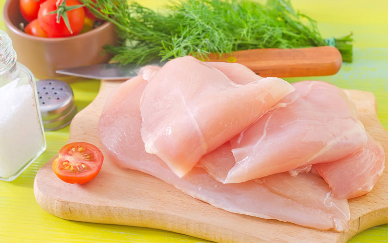
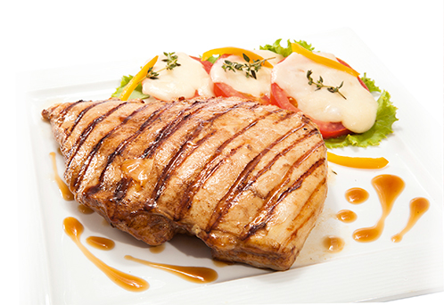

Filet de pachugas

Una de de nuestras especialidas que podra encontrar es el filet o milanesa de pechugas,elaborado en nuestro establecimiento con pollos de alta calidad ,ahora en 2 presentaciones : medio kilo y un kilo es una de las tantas preparaciones que usted prodra encontrar en nuestro establecimiento.
